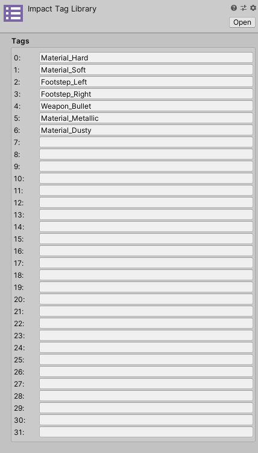
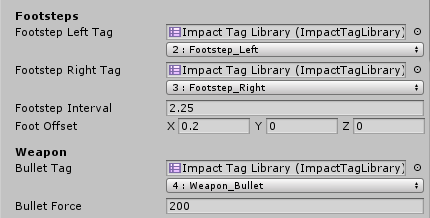

Impact Tags
Impact Tags are the foundation by which Impact determines what interactions to play. Tags can be anything you want. They can correspond to simple material types like "Hard" and "Soft" materials, more detailed material types like "Metal", "Wood", or "Stone", or even represent events or actions like "Footstep" or "Bullet Impact".
Impact Tag Library
The Impact Tag Library defines all of the tags that will be used throughout the Impact system. You can create a new Impact Tag Library by going to .
You can define up to 32 tags, in any order and using any values you like.
Typically your project will only need one tag library, but it is technically possible to use multiple tag libraries. Just remember that under the hood tags are represented only by integers, so using multiple tag libraries with different tag names does not mean you can have more than 32 tags.
Note: It is recommended that you create a new Impact Tag Library rather than reusing the tag library that comes with the demo. This is because Unity will by default overwrite the tag library asset when you update the Impact package, since the tag library asset will have the same GUID as the one contained in the Impact package.
Using Impact Tags
Impact Tags can be very useful to define in your own code. Impact Tags have 2 data structures related to their use:
- ImpactTag – A data structure representing a single tag.
- ImpactTagMask – A data structure representing a mask with potentially multiple tags set.
All you have to do to use these data structures is create serialized properties for them:
//Show tag and tag mask in the inspector [SerializeField] private ImpactTag myImpactTag; [SerializeField] private ImpactTagMask myImpactTagMask;
A custom inspector will automatically be displayed for the tags and tag masks. As an example, the character controller provided in the demo uses the ImpactTag data structure to define its footstep and weapon impact tags.
The first field is an Impact Tag Library which is used to display a user-friendly dropdown for the tag or tag mask. The second field represents the actual value of the tag or tag Mask. If you don't provide an Impact Tag Library the raw integer value of the tag will be displayed.